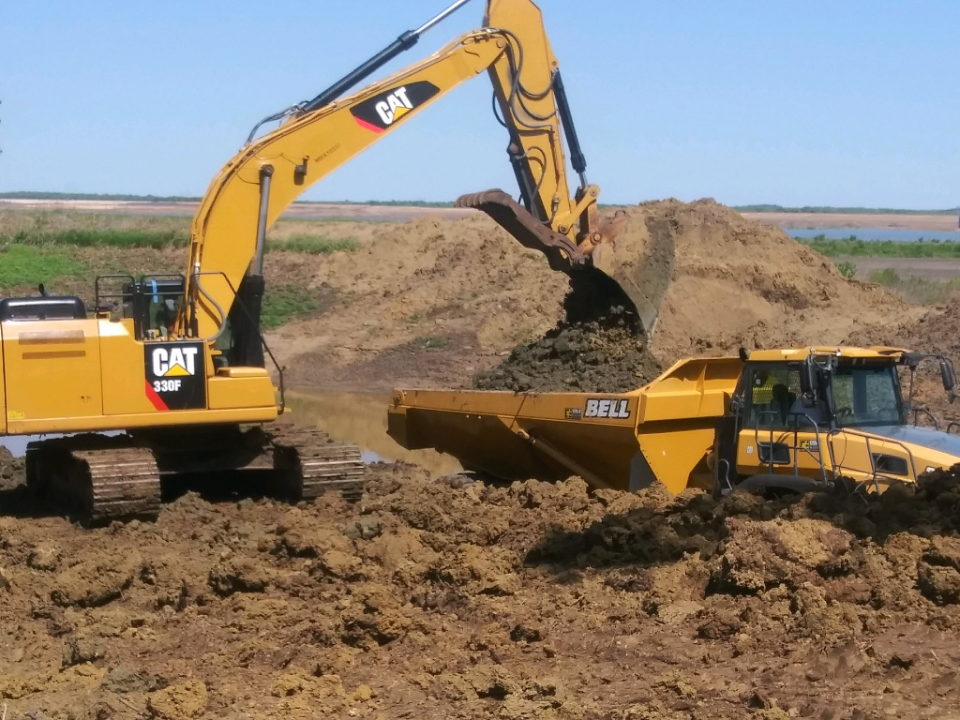
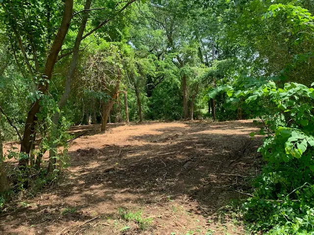

Mass Excavation
Large-scale earthwork, excavation, and material relocation.
Discuss this serviceFAMILY OWNED. FIELD PROVEN.
Site development and heavy civil construction. Dependable service, from the first clearing to the final grade.

WHAT WE DO
From initial site preparation to final grading, we’re equipped to help get your project moving.
Large-scale earthwork, excavation, and material relocation.
Discuss this serviceSafe and efficient demolition and removal of existing structures and site improvements.
Discuss this serviceRemoval of trees, brush, vegetation, and other unwanted materials to prepare sites for construction.
Discuss this serviceInstallation, removal, and replacement of commercial, industrial, and perimeter fencing systems.
Discuss this serviceRough and finish grading to establish proper elevations, drainage, and construction-ready surfaces.
Discuss this serviceInstallation and maintenance of erosion and sediment control measures to protect surrounding areas and meet project requirements.
Discuss this service
ROOTED IN HARD WORK
Established in 2012, TGW Land Services is a family-owned and operated company built around quality workmanship and professional results.
Get to know TGWA LOOK AT OUR WORK
LET’S GET TO WORK
Tell us what you have in mind. We’ll take it from there.